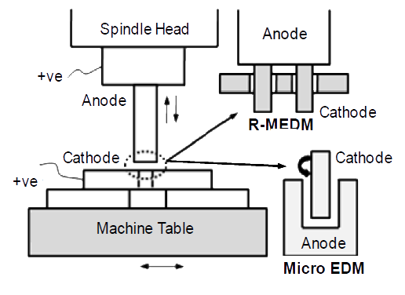

Fabrication of Texture on Curved Surfaces using Reverse Micro Electrical Discharge Machining
About
In the nature, number of bacteria, plants and animals show the unique surface characteristics due to presence of micro/nano features (textures) on their surfaces. Many engineering products in precision, micro and nano engineering are inspired from these features on the surfaces. The textured surfaces on micro/meso parts could potentially enhance the functioning of these products for certain applications like enhanced heat exchangers, surfaces to capture contaminations.
Abstract
Reverse micro Electrical Discharge Machining (R-MEDM) is a variant of micro EDM process developed for machining high aspect ratio arrayed features on metallic surfaces. A 3x21 and 3x14 arrays of ɸ 200 μm pillars at a center-to-center distance of 0.4 mm and 0.6 mm respectively were simultaneously fabricated on workpiece containing convex, concave and inclined surfaces. Texturing the surface with pillars had enhanced the contact angle with water of the surface, thus improving hydrophobicity of the surface.
The research was done with Mr. Sachin Mastud, Phd student and under the guidance of Prof. Suhas Joshi, Mechanical Engineering, IIT Bombay.
Approach
Process

Setup

{kind=link}
{kind=link}
{kind=link}
{kind=link}
{kind=link}